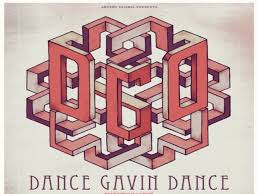

Dance Gavin Dance Band
Genre
Dance Gavin Dance is a post-hardcore band.
Members
Tillian Pearson: Vocals
Will Swan & Josh Benton: Guitar
Matt Mingus: Drums
Point of Origin
This band is based in Sacramento, CA